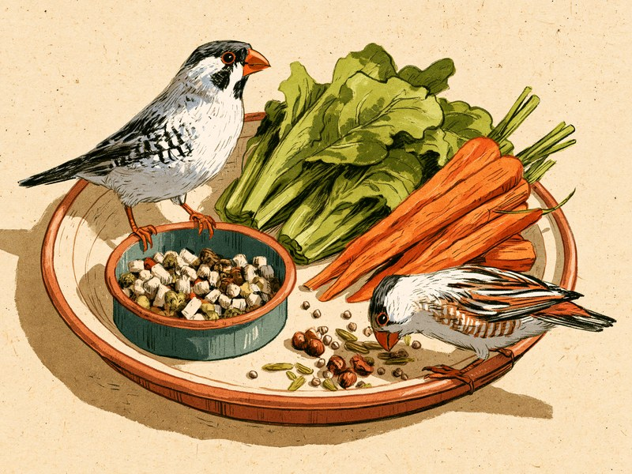

小鳥の餌といえば「粟や稗のシード」を思い浮かべる方が多いかもしれません。でも今は、必要な栄養がひと粒ずつに詰まったペレットという選択肢があり、どちらを主食にするかで副食の考え方が大きく変わります。ここでは主食の選び方、副食にできる野菜、意見が分かれるカルシウム源、そして絶対に与えてはいけない食べ物を、断定できる強さの違いも含めて整理しました。 Many people picture millet seed when they think of bird food, but formulated pellets are designed to be a complete diet on their own, and your choice of staple changes what else the bird needs. Here is how to choose a staple, which vegetables make good sides, why experts disagree about calcium sources, and which foods must never go in the bowl.
主食を「ペレット」にするなら、高品質なものは基本的にそれだけで必要な栄養がそろいます。主食を「シード」にするなら、緑黄色野菜・カルシウム源・ビタミン剤を副食として必ず添えます。そしてどちらの場合も、アボカドとネギ類は絶対に与えず、水は毎日新鮮なものに。この3点を押さえれば、小鳥の食事の基本はクリアです。
主食はペレットかシードか。違いは「副食が必要かどうか」
小鳥の主食には、大きく分けてペレットとシード(種子の混合餌)の2種類があります。ペレットは必要な栄養素を一粒ごとに配合した加工餌で、高品質なものは基本的にそれだけで必要な栄養素を摂取できる総合栄養食として設計されています。
一方のシードは粟や稗などの種子そのもので、小鳥はよろこんで食べますが、それだけでは栄養が偏ります。そのため主食にする場合は、副食として緑黄色野菜・カルシウム源・ビタミン剤を必ず添える必要があります。
つまり主食選びのポイントは、「ペレットならそれで栄養が完結するが、シードなら足りない分を自分で補う」という違いです。ペレットなら品質のよいものを、シードなら副食まで含めた献立を、と考えておくと迷いません。
出典を見る
出典: アニコム損保(獣医師監修、主食と副食の考え方) anicom-sompo.co.jp
副食にできる野菜と、与えすぎに注意したい野菜
副食の野菜には、レタス、サニーレタス、ニンジン、カボチャ、豆苗などがあります。ニンジンはβ-カロテンが豊富で、色の濃い野菜の代表格です。小鳥がつつきやすいように小さく切って与えましょう。
一方、小松菜・チンゲンサイ・ブロッコリーといったアブラナ科の野菜は、ゴイトロゲンという成分の影響があるため与えすぎに注意が必要とされています。「絶対にダメ」ではありませんが、毎日大量にではなく、ほかの野菜とローテーションする位置づけにしておくと安心です。
野菜はあくまで副食です。主食を食べる量を減らさない範囲で、彩りとして添えるイメージで考えてください。
出典を見る
出典: アニコム損保(獣医師監修、食べられる野菜・アブラナ科野菜の注意点) anicom-sompo.co.jp
カルシウム源:ボレー粉とカトルボーンは「見解が分かれる」
シードを主食にする場合に必要なカルシウム源として、昔から使われているのがボレー粉(牡蠣の殻を砕いたもの)とカトルボーン(イカの甲)です。どちらも定番ですが、「どちらが適切か」は専門家の間でも見解が分かれています。
ある獣医師はカトルボーンが胃炎の原因になるとしてボレー粉を推奨し、別の飼育本の著者はボレー粉が胃の中で固まるとしてカトルボーンを推奨しています。互いに相手方のリスクを指摘している状態で、本記事でどちらかを「正解」と断定することはできません。
はっきり言えるのは、ペレットを主食にしている場合はボレー粉やカトルボーンの追加は栄養面で不要とされていること。カルシウム源で迷うのは基本的にシード主食のときだけ、と覚えておいてください。
出典を見る
出典: インコ生活(ボレー粉とカトルボーンをめぐる獣医師・飼育本著者の見解の相違、ペレット主食時は不要) inko.exp.jp / アニコム損保 anicom you(ペレット主食時は栄養面で不要という点で一致) mag.anicom-sompo.co.jp(見解が分かれているため、本記事ではどちらかを推奨していません)
与えてはいけない食べ物一覧
小鳥に与えてはいけない食べ物には、人の食卓に普通に並ぶものも含まれます。「危険とはっきり分かっているもの」と「念のため避けたいもの」では確かさの度合いが違うため、区別して紹介します。まずは獣医師監修や鳥類専門の動物病院の情報で危険性が確認されている、必ず避けるべき食べ物です。
- アボカド(果肉・種・皮すべて):ペルシンという毒性成分を含み、鳥に対して猛毒です。食べてから24時間以内に食欲不振・沈うつ・呼吸促迫などの症状が出て、急速に進行します。獣医師監修サイトと鳥類専門動物病院の両方で一致している、もっとも注意すべき食べ物です。
- ネギ類(玉ねぎ・長ネギ・にんにく・ニラ):赤血球を破壊し、溶血性貧血を起こします。加熱しても毒性は消えないため、料理に混ざったものも与えないでください。
- リンゴなどの種:アミグダリンという中毒物質を含みます。果肉を与えるときは、種を必ず取り除いてください。
出典を見る
出典: アニコム損保(獣医師監修、アボカド・ネギ類・リンゴの種の危険性) anicom-sompo.co.jp。アボカドについては鳥類専門動物病院の情報とも一致しています
次に、上ほど強い裏づけはないものの、与えないほうがよいとされている食べ物です。
- チョコレート・カフェイン飲料・アルコール:心臓や神経系に障害を与えるとされ、与えないほうがよいとされています。一般の飼育情報での言及が中心で、獣医師監修の情報では確認できていませんが、人の嗜好品を小鳥に分ける理由はないので避けておきましょう。
- 生の豆類:加熱していない豆は避けるのが無難です。小鳥での実際の中毒例までは確認できていませんが、わざわざ与えるものではありません。
出典を見る
出典: チョコレート・カフェイン・アルコールは一般の飼育情報での言及にとどまり、獣医師監修の一次情報では未確認。生の豆類は鳥での中毒報告例を確認できていないため、慎重な表現にとどめています
迷う食材があるときは「迷ったら与えない」を原則にすると安心です。なお、アボカドは食べ物だけでなく、葉や樹皮も小鳥には危険とされています。観葉植物やキッチンの調理器具など、家の中に潜む危険は鳥の飼い方の基本ガイドで紹介しています。
与えてはいけない食べ物は、器に入れなければ安全、というわけではありません。放鳥中にテーブルの上のアボカドやネギの入った料理をつついてしまうこともあります。放鳥するときは、食卓の上に食べ物を出しっぱなしにしないようにしましょう。
水は「新鮮に、室温で」
餌の話で見落とされがちなのが水です。小鳥には常に新鮮な水を用意することが大切ですが、水入れはフンが落ちたり水浴びに使われたりして汚れやすく、衛生的な管理がほかの動物以上に必要になります。
水を替えるときは、冷蔵庫から出したばかりの冷たい水ではなく室温に戻してから与えてください。冷たすぎる水は小さな体の負担になります。
毎日の餌の補充とあわせて、水入れの汚れ具合と水の減り方を確認する習慣をつけましょう。飲水の様子は体調変化に気づくきっかけにもなります。
出典を見る
出典: こばやし小鳥クリニック(水入れの衛生管理・新鮮な水・室温に戻してから与える) ameblo.jp/kotori-clinic
小鳥の水入れが汚れやすいのは、飲むためだけでなく水浴びにも使われてしまうから。小鳥にとって水入れは「飲み物」であり「お風呂」でもある、というわけです。だからこそ、水は毎日新鮮なものに替え、器そのものもきれいに保っておく必要があります。
ミニクイズ:ペレットを主食にしている小鳥に、ボレー粉やカトルボーンは必ず追加したほうがよい?(タップして答えを見る)
こたえ×。ペレットは総合栄養食として設計されているため、栄養面での追加は不要とされています。カルシウム源で迷うのは基本的にシード主食のときで、その場合もボレー粉とカトルボーンのどちらが適切かは専門家の間でも見解が分かれています。